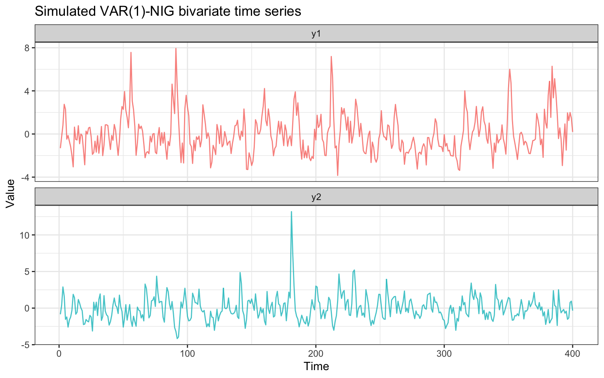
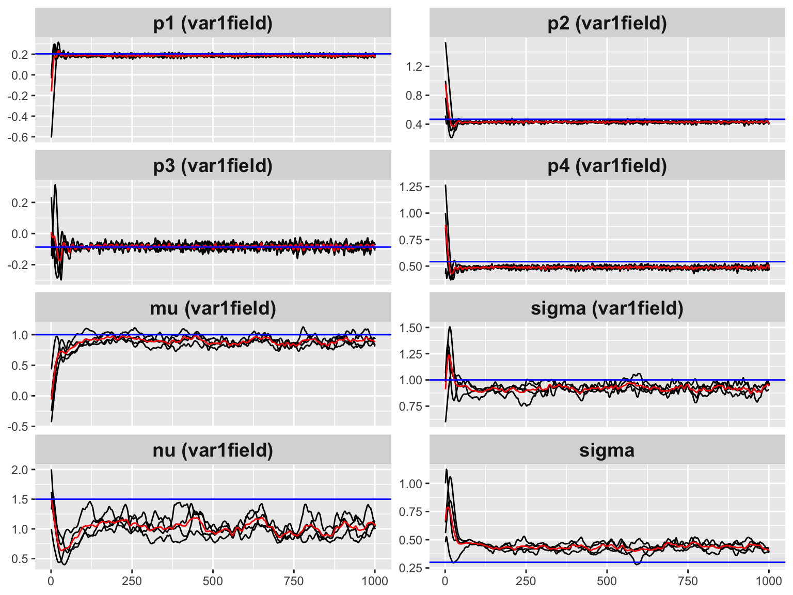

Introduction
The Vector Autoregressive model of order 1 (VAR(1)) extends the univariate AR(1) to a bivariate (or multivariate) setting. At each time step the state vector depends linearly on the previous state:
where and is a VAR coefficient matrix. For the process to be stationary, all eigenvalues of must lie strictly inside the unit circle, i.e. .
The ngme2 package provides var1(),
which:
- Guarantees stationarity via the Cayley reparameterization (see below).
- Supports non-Gaussian innovations (NIG, GAL, normal).
- Integrates seamlessly with the rest of
ngme2: fixed effects, measurement noise, prediction.
Model Specification
Precision matrix
Multiplying both sides of the VAR(1) equation by the inverse factor gives the precision structure. Define the matrices
The precision matrix of is
where:
| Matrix | Block structure | Encodes |
|---|---|---|
| identity | Base | |
| top-left block | Own-lag | |
| bottom-right block | Own-lag | |
| top-right block | Cross-lag | |
| bottom-left block | Cross-lag |
The sub-diagonal of each block carries the coefficient (sign convention from the formulation).
Cayley reparameterization
Directly optimizing does not guarantee stationarity: for each element is necessary but not sufficient (e.g. has ).
var1() uses four unconstrained
parameters
and the Cayley transform to produce any stationary
matrix:
Why does this guarantee ?
, which is negative definite. Hence every eigenvalue of has strictly negative real part. The Cayley transform maps matrices with all eigenvalues having to matrices with all eigenvalues inside the unit disk: .
# Helper: Cayley transform given unconstrained params
cayley_to_A <- function(p, eps = 1e-5) {
J <- matrix(c(0, -p[1], p[1], 0), 2)
L <- matrix(c(p[2], p[3], 0, p[4]), 2)
R <- L %*% t(L) + eps * diag(2)
S <- J - R
I2 <- diag(2)
solve(I2 - S, I2 + S)
}
# Verify: 10,000 random unconstrained params always give rho(A) < 1
set.seed(42)
max_sr <- max(replicate(10000, {
p <- rnorm(4, sd = 3)
p[2] <- abs(p[2]) + 0.01
p[4] <- abs(p[4]) + 0.01
max(abs(eigen(cayley_to_A(p), only.values = TRUE)$values))
}))
cat(sprintf("Maximum spectral radius over 10,000 random draws: %.6f\n", max_sr))
#> Maximum spectral radius over 10,000 random draws: 0.999764Interpretation of the parameters:
| Parameter | Role |
|---|---|
| rotation (skew-symmetric part of ) | |
| contraction strength along each axis (diagonal of ) | |
| off-diagonal mixing in the contraction factor |
The default gives (effectively no temporal dependence at initialization).
Using var1() in ngme2
Function signature
var1(mesh = NULL, p1 = 0, p2 = 1, p3 = 0, p4 = 1)| Argument | Meaning |
|---|---|
mesh |
Integer vector 1:T (or a 1-D fmesher mesh) defining the
time grid |
p1–p4
|
Starting values for the four Cayley parameters |
Model formula
ngme(
y ~ 0 + f(idx,
model = var1(mesh = 1:T),
group = group,
noise = noise_nig()),
data = data.frame(y, idx, group),
group = group,
family = noise_normal()
)Simulation Study
We simulate a VAR(1)-NIG process with a known coefficient matrix, fit the model, and verify parameter recovery.
True parameters
We choose
and invert the Cayley map to obtain the corresponding unconstrained parameters.
# True VAR coefficient matrix
A_true <- matrix(c(0.6, -0.2, 0.3, 0.5), nrow = 2)
cat("A_true:\n")
#> A_true:
print(A_true)
#> [,1] [,2]
#> [1,] 0.6 0.3
#> [2,] -0.2 0.5
cat("Spectral radius:", max(abs(eigen(A_true)$values)), "\n")
#> Spectral radius: 0.6
# Invert Cayley: S = (A - I)(A + I)^{-1}, R = (S^T + S)/(-2), J = S + R
eps <- 1e-5
I2 <- diag(2)
S_inv <- solve(A_true + I2, A_true - I2)
R_inv <- -(S_inv + t(S_inv)) / 2 # positive definite
J_inv <- S_inv + R_inv # skew-symmetric
# Extract unconstrained params
p1_true <- J_inv[1, 2]
L_true <- t(chol(R_inv - eps * I2)) # lower-triangular Cholesky
p2_true <- L_true[1, 1]
p3_true <- L_true[2, 1]
p4_true <- L_true[2, 2]
cat(sprintf(
"\nUnconstrained params: p1=%.4f p2=%.4f p3=%.4f p4=%.4f\n",
p1_true, p2_true, p3_true, p4_true
))
#>
#> Unconstrained params: p1=0.2033 p2=0.4685 p3=-0.0868 p4=0.5415
# Verify round-trip
A_check <- cayley_to_A(c(p1_true, p2_true, p3_true, p4_true))
cat("Round-trip error:", max(abs(A_check - A_true)), "\n")
#> Round-trip error: 1.110223e-16NIG innovation noise with:
mu_true <- 1.0 # skewness
sigma_true <- 1.0 # scale
nu_true <- 1.5 # heavy-tailedness (smaller = heavier tails)
sigma_eps <- 0.3 # measurement noise stdSimulate the process
set.seed(2025)
T <- 400
group <- factor(c(rep("y1", T), rep("y2", T)), levels = c("y1", "y2"))
f_true <- f(
c(1:T, 1:T),
model = var1(
mesh = 1:T,
p1 = p1_true, p2 = p2_true,
p3 = p3_true, p4 = p4_true
),
group = group,
noise = noise_nig(mu = mu_true, sigma = sigma_true, nu = nu_true)
)
W <- simulate(f_true, nsim = 1)[[1]]
Y <- W + rnorm(2 * T, 0, sigma_eps)
cat(
"Series y1: mean =", round(mean(Y[1:T]), 2),
" sd =", round(sd(Y[1:T]), 2), "\n"
)
#> Series y1: mean = 0.16 sd = 1.95
cat(
"Series y2: mean =", round(mean(Y[(T + 1):(2 * T)]), 2),
" sd =", round(sd(Y[(T + 1):(2 * T)]), 2), "\n"
)
#> Series y2: mean = 0.11 sd = 1.62Visualise the simulated series
df_plot <- data.frame(
t = rep(1:T, 2),
y = Y,
series = rep(c("y1", "y2"), each = T)
)
ggplot(df_plot, aes(t, y, colour = series)) +
geom_line(linewidth = 0.5, alpha = 0.8) +
facet_wrap(~series, ncol = 1, scales = "free_y") +
labs(
title = "Simulated VAR(1)-NIG bivariate time series",
x = "Time", y = "Value"
) +
theme_bw() +
theme(legend.position = "none")
The two series share the same NIG innovation distribution and are cross-correlated through the off-diagonal entries of .
Cross-correlation check
y1 <- Y[1:T]
y2 <- Y[(T + 1):(2 * T)]
ccf_vals <- ccf(y1, y2, lag.max = 5, plot = FALSE)
cat("CCF at lags -2:+2 (index 4:8 of the acf array):\n")
#> CCF at lags -2:+2 (index 4:8 of the acf array):
print(round(ccf_vals$acf[4:8, , ], 3))
#> [1] -0.286 -0.223 0.003 0.272 0.358
cat("Lags:", ccf_vals$lag[4:8, , ], "\n")
#> Lags: -2 -1 0 1 2Model Fitting
df <- data.frame(Y = Y, idx = rep(1:T, 2), group = group)
fit <- ngme(
Y ~ 0 +
f(idx,
model = var1(mesh = 1:T),
name = "var1field",
group = group,
noise = noise_nig()
),
data = df,
group = df$group,
family = noise_normal(),
control_opt = control_opt(
iterations = 1000,
n_parallel_chain = 4,
seed = 42
)
)
#> Starting estimation...
#>
#> Starting posterior sampling...
#> Posterior sampling done!
#> Average standard deviation of the posterior W: 1.772265
#> Note:
#> 1. Use ngme_post_samples(..) to access the posterior samples.
#> 2. Use ngme_result(..) to access different latent models.Summary of estimated model
print(fit)
#> *** Ngme object ***
#>
#> Fixed effects:
#> None
#>
#> Models:
#> $var1field
#> Model type: VAR(1) bivariate model
#> A (VAR coefficient matrix, Cayley reparameterization):
#> [[ 0.591, 0.287 ],
#> [ -0.207, 0.520 ]]
#> spectral radius = 0.6059
#> unconstrained (p1, p2, p3, p4) = 0.19936, 0.47602, -0.06837, 0.52849
#> Noise type: NIG
#> Noise parameters:
#> mu = 1.15
#> sigma = 0.99
#> nu = 1.81
#>
#> Measurement noise:
#> Noise type: NORMAL
#> Noise parameters:
#> sigma = 0.284Estimated vs true VAR coefficient matrix
# Extract estimated operator
op_est <- fit$replicates[[1]]$models[["var1field"]]$operator
# Retrieve theta_K from the last iteration (posterior mean over chains)
traj <- attr(fit$replicates[[1]]$models[["var1field"]], "lat_traj")
last_mat <- do.call(cbind, lapply(traj, function(m) m[, ncol(m), drop = FALSE]))
theta_last <- rowMeans(last_mat)[seq_len(4)]
A_est <- op_est$cayley_to_A(theta_last)
cat("True A matrix:\n")
#> True A matrix:
print(round(A_true, 4))
#> [,1] [,2]
#> [1,] 0.6 0.3
#> [2,] -0.2 0.5
cat("\nEstimated A matrix:\n")
#>
#> Estimated A matrix:
print(round(A_est, 4))
#> [,1] [,2]
#> [1,] 0.5914 0.2874
#> [2,] -0.2068 0.5203
cat("\nMax absolute error:", round(max(abs(A_est - A_true)), 4), "\n")
#>
#> Max absolute error: 0.0203
cat("True spectral radius: ", round(max(abs(eigen(A_true)$values)), 4), "\n")
#> True spectral radius: 0.6
cat("Estimated spectral radius:", round(max(abs(eigen(A_est)$values)), 4), "\n")
#> Estimated spectral radius: 0.6059Noise parameter recovery
# Latent NIG noise (theta_mu on natural scale; theta_sigma/theta_nu log-scale)
noise_lat <- fit$replicates[[1]]$models[["var1field"]]$noise
# Measurement normal noise (theta_sigma log-scale)
noise_meas <- fit$replicates[[1]]$noise
mu_est <- noise_lat$theta_mu
sigma_est <- exp(noise_lat$theta_sigma)
nu_est <- exp(noise_lat$theta_nu)
sigma_eps_est <- exp(noise_meas$theta_sigma)
cat("Parameter | True | Estimated\n")
#> Parameter | True | Estimated
cat("-----------|--------|----------\n")
#> -----------|--------|----------
cat(sprintf("mu | %.2f | %.4f\n", mu_true, mu_est))
#> mu | 1.00 | 1.1536
cat(sprintf("sigma | %.2f | %.4f\n", sigma_true, sigma_est))
#> sigma | 1.00 | 0.9898
cat(sprintf("nu | %.2f | %.4f\n", nu_true, nu_est))
#> nu | 1.50 | 1.8065
cat(sprintf("sigma_eps | %.2f | %.4f\n", sigma_eps, sigma_eps_est))
#> sigma_eps | 0.30 | 0.2843Convergence trace plots
# Add horizontal lines at true values for operator params
traceplot(fit,
hline = c(
p1_true, p2_true, p3_true, p4_true,
mu_true, sigma_true, nu_true, sigma_eps
)
)
#> Last estimates:
#> $`p1 (var1field)`
#> [1] 0.1993569
#>
#> $`p2 (var1field)`
#> [1] 0.4760203
#>
#> $`p3 (var1field)`
#> [1] -0.06837111
#>
#> $`p4 (var1field)`
#> [1] 0.5284871
#>
#> $`mu (var1field)`
#> [1] 1.126534
#>
#> $`sigma (var1field)`
#> [1] 0.9754186
#>
#> $`nu (var1field)`
#> [1] 1.729008
#>
#> $sigma
#> [1] 0.3289182The horizontal dashed lines mark the true parameter values. The chains converge to the correct region within a few hundred iterations.
Gaussian vs Non-Gaussian Noise
To illustrate that the non-Gaussian model is preferred when the data truly contains heavy tails, we fit the same data with Gaussian innovations and compare the log-likelihood.
fit_gauss <- ngme(
Y ~ 0 +
f(idx,
model = var1(mesh = 1:T),
name = "var1field",
group = group,
noise = noise_normal()
),
data = df,
group = df$group,
family = noise_normal(),
control_opt = control_opt(
iterations = 500,
n_parallel_chain = 4,
seed = 42
)
)
#> Starting estimation...
#>
#> Starting posterior sampling...
#> Posterior sampling done!
#> Average standard deviation of the posterior W: 1.73551
#> Note:
#> 1. Use ngme_post_samples(..) to access the posterior samples.
#> 2. Use ngme_result(..) to access different latent models.
ll_nig <- compute_log_like(fit)[[1]]
ll_gauss <- compute_log_like(fit_gauss)[[1]]
cat("NIG model - log-likelihood:", round(ll_nig, 2), "\n")
#> NIG model - log-likelihood: 0
cat("Gauss model - log-likelihood:", round(ll_gauss, 2), "\n")
#> Gauss model - log-likelihood: 0Summary
The var1() function in ngme2 provides a
VAR(1) bivariate latent field with:
- Guaranteed stationarity at every iteration via the Cayley transform
- Non-Gaussian flexibility through NIG / GAL / normal innovation noise
-
Full integration with
ngme2’s MCMC-SGD optimizer, posterior sampling, and traceplots
Key points:
| Feature | Detail |
|---|---|
| Parameterization | 4 unconstrained params |
| Stationarity | guaranteed by construction |
| Gradient | Numerical (central differences via update_all) |
| Noise | Single shared NIG/GAL/normal distribution |
| Data layout | Stacked y = c(y1, y2),
group = factor(...)
|